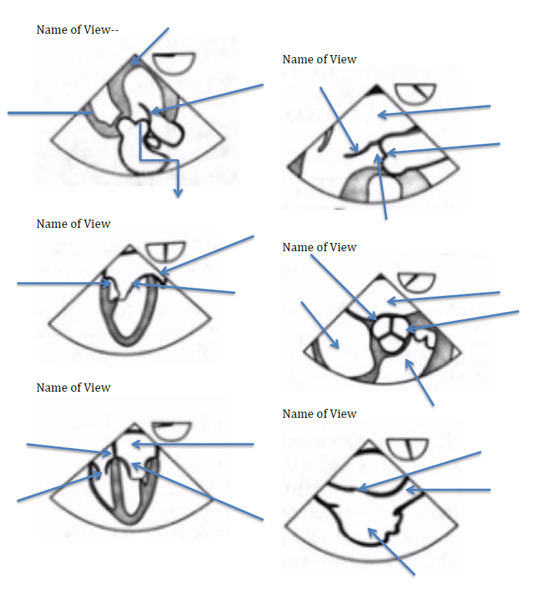
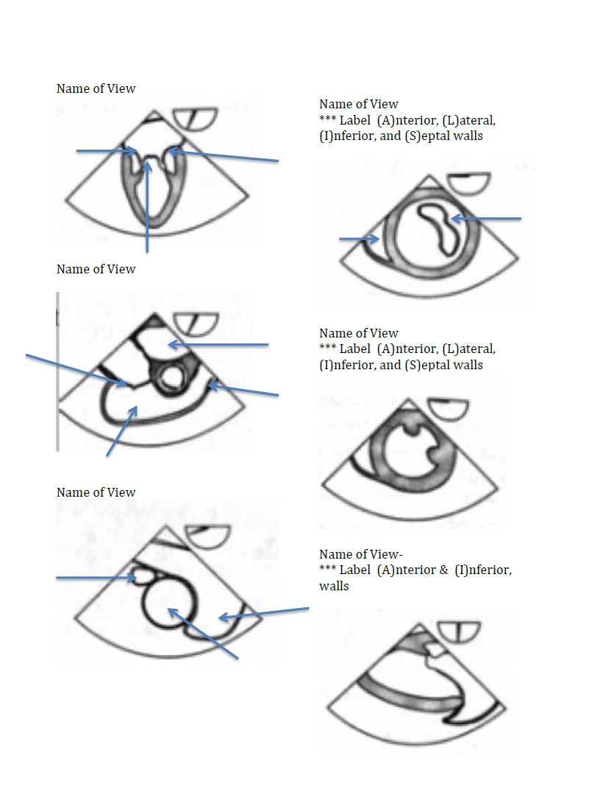
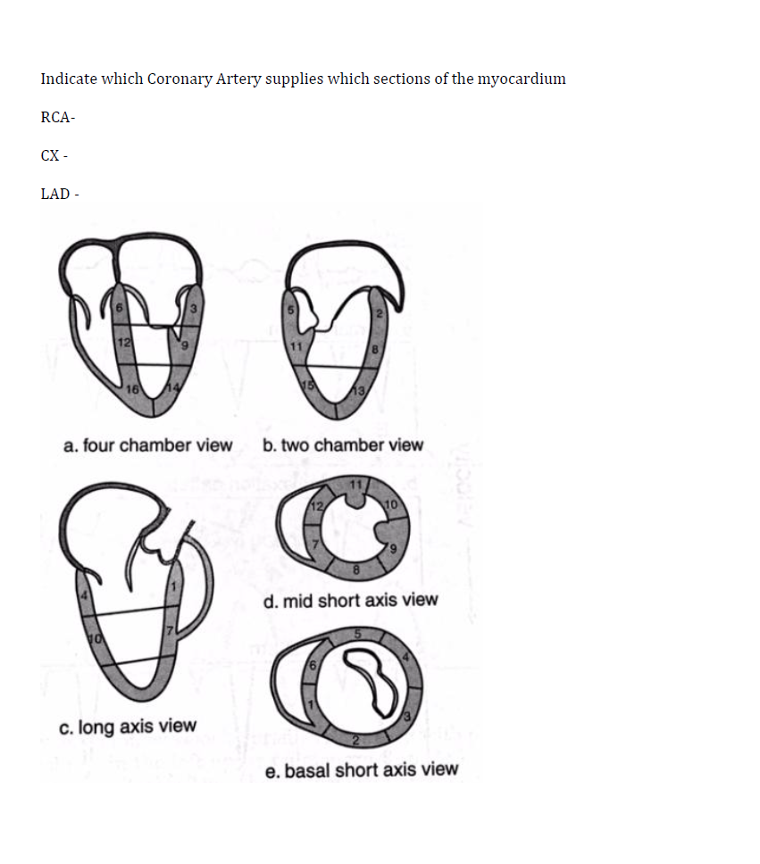

01
Cardiopulmonary Bypass & Cardioprotection
Question 1
List 4 ways to provide cardio-protection during CPB.
i.
ii.
iii.
iv.
Question 2
After going on pump you notice the patient's right side of face is stark white. What is the cause?
Question 3
After going on CPB you notice the head is bluish-purple. What should you do?
Question 4
During CPB utilizing femoral arterial cannulation, which arterial line placement ensures the entire aortic arch is perfused?
Question 5
Why is LV venting important? (2 reasons)
i.
ii.
Question 6
Name 2 common ways to vent the LV.
i.
ii.
02
Oxygen Delivery & Utilization
Question 7
Write out the Delivery of Oxygen (DO₂) equation.
Question 8
Write out the Oxygen Utilization (VO₂) equation.
Question 9
Why does SvO₂ decline between the OR and ICU? Describe factors influencing oxygen utilization.
Question 10
Nitrous Oxide improves cardiac output.
Nitrous oxide depresses myocardial function and does not improve cardiac output.
03
CPB Troubleshooting
Question 11
Patient is on full CPB flow, cross-clamp NOT applied, CVP and PA pressure are zero, yet the patient has a pulsatile arterial line. What is the diagnosis?
Question 12
During antegrade cardioplegia you notice a rise in PA pressure. What is the diagnosis?
Question 13
The most common reason for ST segment elevation post-CABG is:
Question 14
A common reason for sudden VFib while coming off pump is:
Question 15
Prior to removing the TEE probe, the ___________ should be assessed to help prevent sudden arrest on transport.
04
Hemodynamics & Equations
Question 16
What are the units for SVR?
b. Derive SVR (Hint: V = IR, Ohm's Law analogy)
Question 17
Write the complete SVR formula:
Question 18
Stroke Volume is dependent on: (3 factors)
i.
ii.
iii.
Question 19
Define Cardiac Output:
Question 20
A Low CI automatically equates to low myocardial function (Low EF).
A low CI does not automatically mean low myocardial function — and a normal CI does not automatically mean normal function.
05
PA Catheter Interpretation
Question 21
What are the major assumptions when interpreting numbers on a PA Catheter?
i.
ii.
Question 22
Reasons for PCWP being greater than PAD:
i.
ii.
Question 23
A PAD greater than _____ mmHg from the PCWP implies intrinsic pulmonary artery pressure rather than LV volume.
Question 24
List 3 situations where PCWP is greater than LVEDP (overestimates filling):
i.
ii.
iii.
Question 25
List 3 situations where PCWP is less than LVEDP (underestimates filling):
i.
ii.
iii.
Question 26
In which West Lung Zone is PCWP NOT a reliable indicator of LVEDV?
Question 27
Cannon V waves correlate with:
Question 28
Cannon A waves correlate with:
Question 29
Thermodilution (non-oximetric) cardiac output is inaccurate in the following situations: (3)
i.
ii.
iii.
Question 30
The focus of treatment for Right Heart Failure and Left Heart Failure are similar.
Right and left heart failure have fundamentally different treatment strategies.
06
Post-Bypass Management
Question 31
Which valve repair carries the highest level of concern for post-bypass troubles?
Question 32
Above what CVP does continued volume resuscitation become worrisome?
07
Heparin & Protamine
Question 33
How is heparin metabolized?
Question 34
Type 2 HIT occurs rapidly in onset and is associated with high mortality.
FALSE — Type 1 HIT occurs 2–5 days post-exposure and resolves without treatment. Type 2 HIT occurs days 5–9, carries 20% risk of thrombosis and 40% mortality.
Question 35
After giving 400 units/kg of heparin, the patient's ACT remains 300. Name the first and second treatments.
i.
ii.
b. What patient population is at highest risk for being non-responsive?
Question 36
Protamine — answer the following:
a. How does protamine work?
b. Where else in medicine is protamine used?
c. Where does protamine come from?
d. Name 3 major reactions (i–iii) and 1 minor reaction (iv) to protamine:
i.
ii.
iii.
iv.
08
Respiratory & Valvular Pathology
Question 37
List the 6 categorical reasons for Hypoxemia: 1 & 3 given
i.
ii.
iii.
iv.
v.
vi.
Question 38
Mitral Valve Prolapse–related MR improves with full ventricular volumes, slow heart rates.
FALSE — MVP-related MR improves with full ventricular volumes and normal heart rates, not slow.
Question 39
AFib is well tolerated in patients with Mitral Stenosis.
FALSE — AFib is poorly tolerated in mitral stenosis; the atrial kick is critical and rate control is essential.
Question 40
In patients with Mitral Stenosis the atrial kick accounts for 35% of cardiac output.
TRUE — In mitral stenosis the atrial kick accounts for ~35% of cardiac output (vs ~20% in normal physiology).
Question 41
A patient receives a TEE under sedation and arrives in the OR appearing blue. Diagnosis and treatment?
Dx:
Tx:
b. Side effects of this medication: (any order)
i.
ii.
c. Other time you'd use this in cardiac surgery?
d. Contraindicated in which patient population?
Question 42
Type A dissections need emergent cardiac intervention for 3 main reasons:
i.
ii.
iii.
Question 43
Sickle Cell SS patient for emergent Type A dissection repair under deep hypothermic circulatory arrest. Anesthetic concerns?
09
Calculations
Question 44
Calculate the Aortic Valve Area — round to the nearest tenth:
| Parameter | Value |
|---|---|
| VTI AV | 20 cm |
| VTI LVOT | 12 cm |
| Diameter LVOT | 20 mm |
Question 45
Aortic Valve Area Classification — fill in area and mean gradient thresholds:
Mild:
Moderate:
Severe:
10
TEE Safety
Question 46
What is the incidence of orogastric trauma from TEE probe?
Question 47
What is the incidence of perforation from TEE probe?
11
TEE Image Identification (complete by hand)
Label all structures indicated by arrows and name each view. Complete this section on a printed copy.
Page 1 — Views 1–6

Page 2 — Views 7–12

Reference views include: ME four chamber, ME two chamber, ME LAX, TG mid SAX, TG two chamber, TG basal SAX, ME mitral commissural, ME AV SAX, ME AV LAX, TG LAX, deep TG LAX, ME bicaval, ME RV inflow-outflow, TG RV inflow, ME asc aortic SAX/LAX, desc aortic SAX/LAX, UE aortic arch LAX/SAX
12
Coronary Artery Territory
Using the numbered myocardial segment diagrams, list the segment numbers each artery supplies. Any order is accepted.

RCA
CX
LAD
13
Hemodynamic Scenarios
Question 48
For each hemodynamic scenario, identify the appropriate treatment.
| CVP | BP | CI | Treatment | |
|---|---|---|---|---|
| 5 | 80/45 | 1.8 | ||
| 15 | 90/60 | 1.8 | ||
| 15 | 140/85 | 1.8 | ||
| 18 | 80/50 | 1.4 | ||
| 10 | 120/80 | 2.0 | ||
| 12 | 85/50 | 3.2 | ||
| 12 | 85/50 | 1.5 | ||
| 6 | 100/65 | 2.2 |